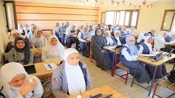

تتويج جهود عام كامل: إعلان نتائج الثانوية العامة 2025
فرحة عارمة تجتاح البيوت المصرية بعد ظهور النتائج وتحديد أوائل الجمهورية
شهدت الساعات الأخيرة إعلان نتائج شهادة الثانوية العامة للعام الدراسي 2025، لتنهي بذلك فترة من الترقب والقلق عاشها آلاف الطلاب وأولياء الأمور في جميع أنحاء الجمهورية. وتصدرت أخبار النتائج اهتمام الرأي العام، حيث بدأ الطلاب في الاستعلام عن نتائجهم عبر المواقع المخصصة، وسط حالة من الفرح والاحتفال.
إعلان ممول
التحق بجامعة المستقبل! خصومات حصرية للمتفوقين. سجل الآن!
تعتبر هذه اللحظة تتويجًا لجهود عام دراسي كامل، بذل فيه الطلاب أقصى ما لديهم من تركيز ومثابرة. وقد أكدت مصادر أن نسب النجاح هذا العام جاءت مرتفعة ومبشرة، مما يعكس جودة العملية التعليمية والجهود المبذولة في توفير بيئة تعليمية مناسبة. وقد تم رصد تفوق ملحوظ في الشعبتين العلمية والأدبية، مع توقعات بارتفاع الحدود الدنيا لبعض الكليات المرموقة.
وأشار خبراء في التعليم إلى أن التحول الرقمي في منظومة التعليم كان له دور كبير في تحسين نتائج الطلاب هذا العام، من خلال توفير مصادر تعليمية متنوعة وتفاعلية ساعدت الطلاب على فهم المواد بشكل أعمق. كما أشادوا بجهود لجان المتابعة والمراقبة التي ضمنت سير الامتحانات في أجواء من الانضباط والعدالة.
وفي سياق متصل، تم تكريم أوائل الجمهورية في احتفالية خاصة، حيث تم الإشادة بتفوقهم الدراسي المتميز، والذي يُعد نموذجًا يُحتذى به لزملائهم. وأعرب العديد من الأوائل عن سعادتهم الغامرة بتحقيق هذا الإنجاز، مؤكدين أن الدعم الأسري والاجتهاد كانا سر نجاحهم، وأنهم يتطلعون الآن إلى بدء مسيرتهم الجامعية.
إعلان هام
أفضل الدورات التدريبية لتنمية مهاراتك. تعلم البرمجة والتسويق مع خبراء. اكتشف المزيد!
وتأتي مرحلة التنسيق كخطوة تالية، حيث يبدأ الطلاب في التفكير في مستقبلهم الأكاديمي والمهني. ومن المتوقع أن تبدأ أعمال التنسيق للجامعات خلال الأيام القليلة المقبلة، وسط توقعات بارتفاع الحدود الدنيا لبعض الكليات المرموقة. ويُشجع الطلاب على مراجعة أدلة التنسيق المتاحة لاختيار الكليات التي تتناسب مع درجاتهم وتطلعاتهم المهنية.